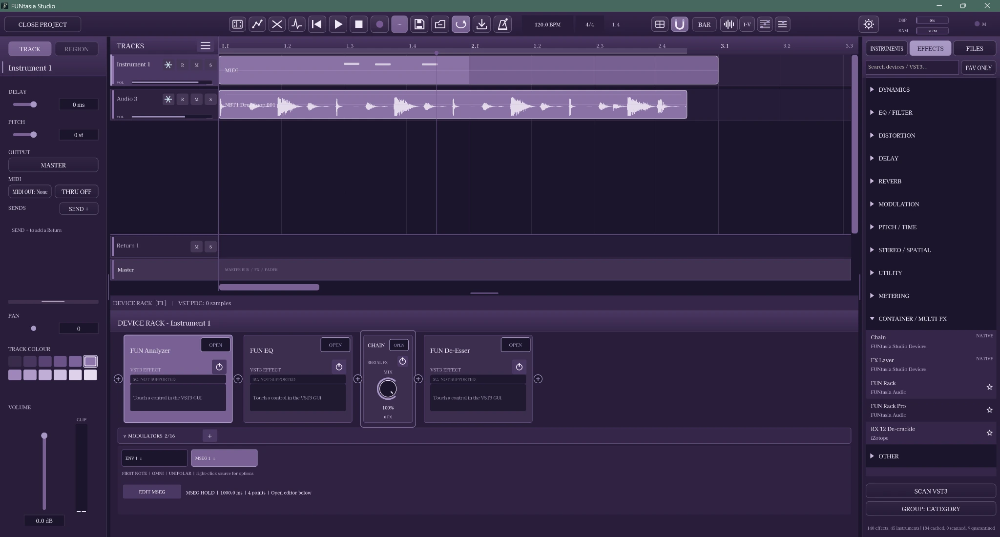
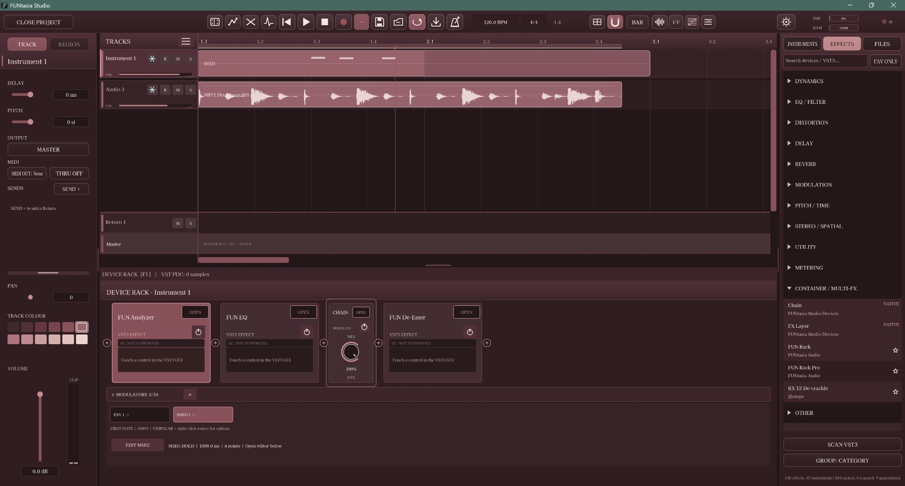
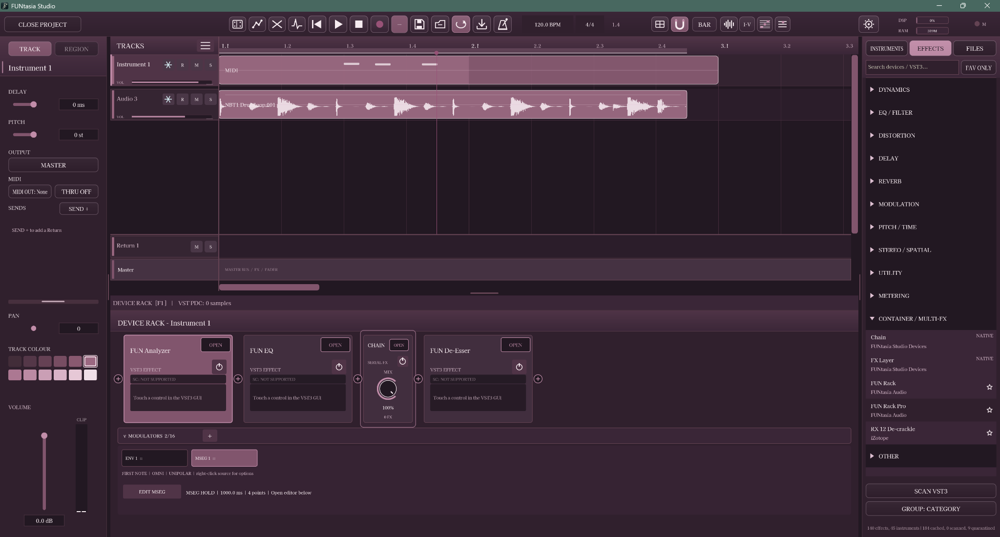

Микшер
Выравнивайте уровни и изучайте, как дорожки соединяются в единый микс.
Бесплатная учебная аудиопрограмма
Изучайте студию.Найдите свой звук.
Творческая среда, в которой основы музыкального производства можно увидеть, услышать и попробовать на практике. Без финансового барьера и без единственно правильного способа создавать музыку.
01 / СТУДИЯ ПОД ВАШ СТИЛЬ
Меняйте атмосферу
Выбирайте одну из девяти цветовых тем, включая Sakura Pink и Aquamarine. Знакомый интерфейс выглядит по-новому, от спокойного графитового до глубокого зелёного. Нажмите на изображение для увеличения.








Иконка окна и заставка подстраиваются под тему. Для Original Sage используется заставка Forest. Показаны реальные интерфейсы; на небольших экранах листайте превью в стороны.
02 / МЕНЬШЕ ПЕРЕКЛЮЧЕНИЙ
Современный подход к редактированию
Редактируйте ноты, регионы и параметры непосредственно в единой рабочей среде. Мы стремимся к естественному творческому процессу без постоянного выбора отдельных инструментов для каждого мелкого действия.

03 / УПРАВЛЯЙТЕ ДЕТАЛЯМИ
Творческий контроль
Создавайте многослойные аранжировки, изучайте инструменты и эффекты. Узнайте, как меняется звук при движении фейдера, автоматизации параметра или изменении маршрутизации. Широкая звуковая палитра всегда под рукой.

04 / ЕДИНОЕ РАБОЧЕЕ ПРОСТРАНСТВО
Обучение на практике
Практикуйтесь в аранжировке, обработке и балансировке аудио, не выходя из учебной среды. Каждая область открывает новую сторону музыкального производства.
Выравнивайте уровни и изучайте, как дорожки соединяются в единый микс.

Изучайте инструменты, эффекты, цепи и многослойную обработку.

Просматривайте звуки и прослушивайте однотактовые MIDI-филлы на акустических или электронных демо-наборах.
05 / ИССЛЕДУЙТЕ МУЗЫКАЛЬНУЮ ТЕОРИЮ
Где звук встречается со знанием
Встроенные учебные панели помогают изучать лады, аккорды и их расположения. Переходите от музыкальных вопросов к практике — будь то первые шаги или повторение основ.

Изучайте тональные связи и гаммы, включая экспериментальную ступенную нотацию в стиле Ruri.

Сравнивайте расположения нот и изменение окраски аккорда.

Посмотрите на ноты и гармонию с позиции другого инструмента.
Зачем существует FUNtasia Studio
Для подростка, который создаёт первый трек; для человека с ограниченным бюджетом; для того, кто может позволить себе дорогое оборудование, но просто хочет учиться. FUNtasia Studio бесплатно открывает одну и ту же среду для всех.
Это образовательное и экспериментальное пространство для изучения материалов мастер-классов и музыкального производства, а не обещание надёжности коммерческой DAW.
Разные обстоятельства. Равное любопытство. Равный доступ.
06 / НАЧНИТЕ ИССЛЕДОВАТЬ
Бета 1.5.0 · Ноябрь 2026
НОВОЕ · BETA 1.5.0
Руководство SCORE VIEW включено на японском, английском, немецком, французском, русском и упрощённом китайском языках.
Исправление в Beta 1.4.1: Устранена проблема, из-за которой окно хоста VST3 и панель пресетов не изменяли размер вслед за интерфейсом плагина. Рекомендуем обновиться с Beta 1.4.0.
ОБНОВЛЕНИЯ ДО БЕТЫ 1.4.0
Cadd9 → 1^235 and Csus2 → 1^25. Доступна в Key & Chord Guide, браузерах ладов и аппликатур, гитарном грифе и Chord Track, включая предварительный просмотр ввода.Нотация Ruri — экспериментальная функция. Дополнительные меры безопасности Bounce/Undo не гарантируют устранения всех сбоев. Это предварительная версия для обучения.
FUNtasia Studio Beta 1.5.0
Бесплатная учебная программа для Windows. На странице релиза GitHub находятся ZIP, сведения о составе архива, установке и важные примечания.
Подробнее об обновлении Beta 1.4.0: статья с иллюстрациями на note (на японском) ↗. Другие материалы: страница Hʉeliang в note ↗.
07 / ПОДДЕРЖКА РАЗРАБОТКИ
Поддержите студию
FUNtasia Studio бесплатна, чтобы каждый мог изучать музыкальное производство независимо от финансовых обстоятельств. Мы хотим и дальше развивать эту среду, сохраняя этот принцип.
Разработка и поддержка программы требуют времени и средств: от оборудования до повседневных расходов. Если вам близка эта идея и у вас есть возможность помочь, мы будем благодарны.
В списке желаний Amazon перечислены оборудование для разработки, продукты питания и предметы первой необходимости. Такая помощь позволяет продолжать работу.
ПОДДЕРЖАТЬ ЧЕРЕЗ AMAZON ↗Поддержка полностью добровольна. FUNtasia Studio остаётся бесплатной независимо от пожертвований. Помогайте только если вам это удобно.